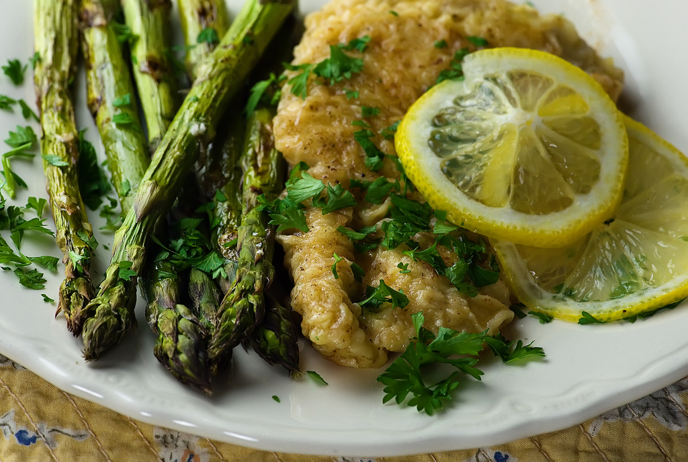

An Italian dish that was also often served in my house growing up.
Saute onions and garlic in olive oil until tender and remove from heat. Pound chicken breasts flat. In a flat bowl, mix flour, salt and pepper. Dip chicken into this mixture. Lightly brown chicken in butter, about 2-3 minutes per side. Add sauteed onions and garlic. Turn up the heat and add sherry, lemon juice, and capers. If the sauce becomes too thick, add chicken stock. Garnish with lemon and parsley.